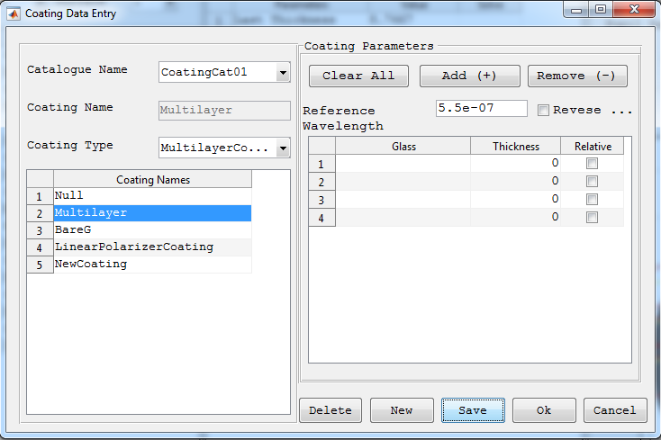

Coating Data Editor

Purpose:
A window used to add new, edit and delete existing coating in the coating catalogues used by the optical system.
Windows Components
- Catalogue Name Popup: Select the coating catalogue to look for coatings.
- Coating Name Text Box: Display name of the coating selected. Or it can also be used to enter a coating name of the new coating to be added.
- Coating Type Popup: Display type of the coating selected. Or it can also be used to enter a coating type of the new coating to be added.
- Caoting List Table: Display all coating in the current catalogue.
- Coating Parameters: Used to view, and edit parameters of the selected coating. This section varies depending on the type of coating selected.
- Delete: Deletes the currently selected coating from the catalogue.
- New: To add a new coating.
- Save: Save the coating data entered to current catalogue. This buttons saves the current coating in to file, disables all coating parameters fields and then toggles to 'Edit' after the coating is saved.
Created with the Personal Edition of HelpNDoc: Free help authoring tool